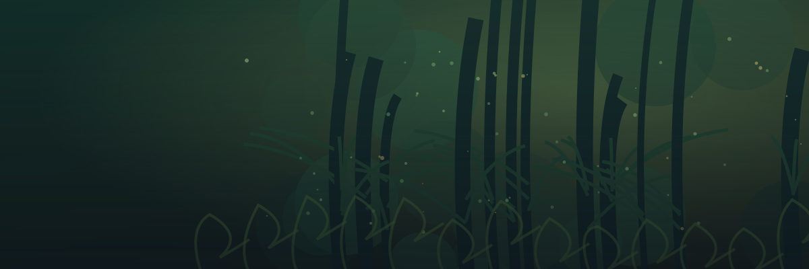

Study attack cycles, log actual moves, and see Strength buffs carry into later hits.
CHOOSE YOUR FOE— ENEMIES
Select an enemy to view its moves. Damage is an estimate; trust the game's intent.
ACT I · THE OVERGROWTHNORMAL ENCOUNTER
⚔
NEXT INTENTSELECT A FOE
✦
Choose an enemy
— HP
THE NEXT ACTION
Select an enemy to begin
Known patterns and possible attacks will appear here.
INCOMING—DAMAGE
Damage preview includes previous Strength buffs where the sequence is documented.
✣
ENEMY STRENGTH BEFORE THIS TURN+0 StrengthNo Strength buffs recorded.
OTHER STR
0
PATTERN MODE
COMBAT TURN
1
Select an opponent. Conditional and random moves cannot be predicted.
SEQUENCE
Turn by turn
Tap “Record move” below after each enemy action.
THE ARSENAL
All possible moves
— MOVES
Moves may depend on conditions or randomness.Source ↗
YOUR RUN / MANUAL PROGRESS

ACT I · PATH A
The Overgrowth
A living labyrinth of tangled growth and restless creatures.
YOU ARE ONFLOOR 01
TRACK YOUR ASCENT
Current location
MANUAL TRACKING
CURRENT ROOM
FLOOR NOTES · 1 OF 16
This is a manual progress tracker, not a recreation of your randomly generated in-game map.
THE CREATURES OF THE SPIRE
Enemy bestiary
Find attack intents, move lists and documented AI patterns. Tap a creature to inspect it.
Enemies
SELECT TO VIEW PATTERNS
READ BEFORE YOUR NEXT BATTLE
How this works
Your second-screen companion. No account, no login, no build tools.
01
Check enemy moves first
The home screen shows enemy attacks and effects. Use the Floor tracker button when you want to update your run. Act 1 can be Overgrowth or Underdocks. Act 2 is the Hive, and Act 3 is Glory. Set the floor and room manually as you play.
02
Inspect an enemy
Pick its portrait. Documented cycles automatically add previous self-applied Strength to future attacks. For uncertain AI, record the actual moves to keep a running Strength total. Other modifiers still require reading in-game intent.
03
Plan around uncertainty
A true fixed cycle can show the next move. Random or conditional AI cannot be predicted reliably; those screens show possible moves instead of pretending to know the future.
04
Keep your place
Your region, floor, notes, room tags, most recently viewed enemy and recorded moves are saved on this device using browser local storage.
Data and artwork
Enemy information is requested from Spire Codex (public community game-data reference) when online. Creature images load from the source's image CDN. The four region illustrations included in this project are custom SVG artwork. A smaller offline sample keeps the tracker and example enemies usable if the database is unavailable.
Game information and creature art belong to Mega Crit. This unofficial fan tool is not endorsed by them. Recheck move values after game patches. Community wiki ↗